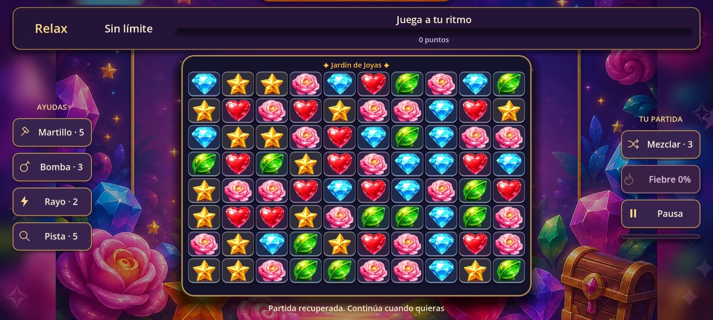
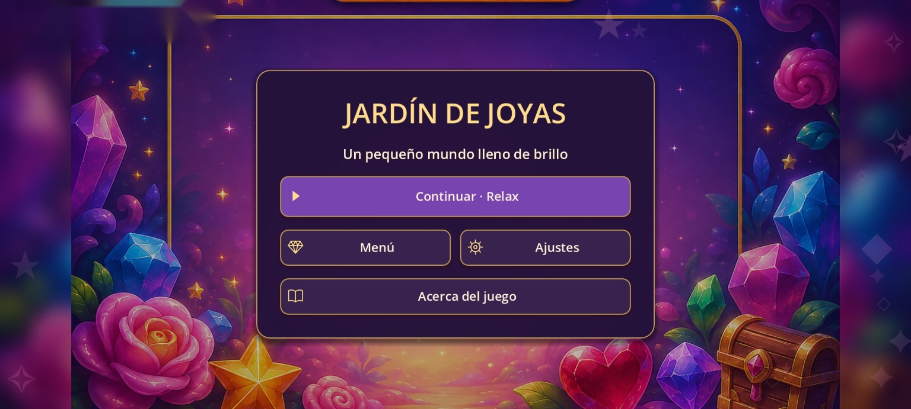
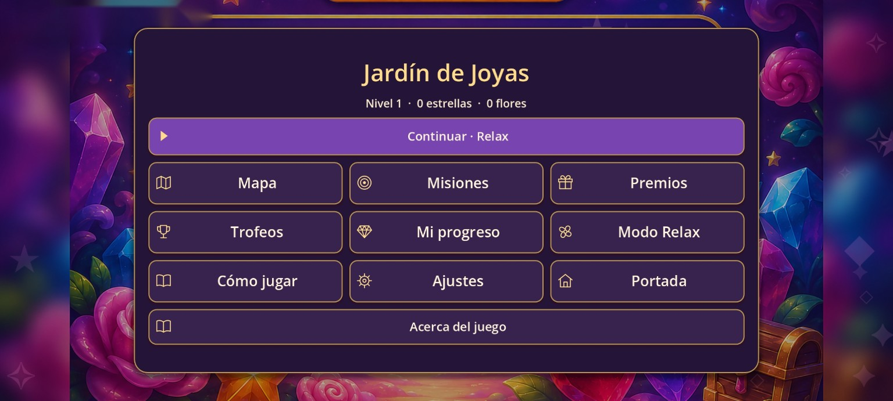

ANDROID · JUEGOS
Jardín de Joyas
Combina joyas, encadena sorpresas y juega a tu ritmo. Descubre 200 niveles o disfruta del modo Relax.
Versión 1.4.1 · Aproximadamente 74 MB · Android 7 o superior
Descarga oficial desde GitHub Releases.
Consultando el contador de GitHub Releases…
Análisis antivirus pendiente. Ver comprobaciones →
El juego, tal como se ve en el móvil
Capturas reales de la versión 1.4.1. Toca una imagen para ampliarla.



Un juego para disfrutar en el móvil
Descarga y comprobaciones
Versión 1.4.1 publicada y probada en el móvil. Análisis antivirus pendiente de realizar por el autor.
Archivo publicado: Jardin_de_Joyas_Pack_6_1_4_1.apk · aproximadamente 74 MB.
SHA-256 del archivo recibido:8e0abb545467d53e19adcbb13ed4aab48d21567c8046b45a0d619bfabbfb70d6
Consulta la información sobre seguridad y verificaciones.
Instalación en Android
Descarga el APK desde esta página y ábrelo desde el gestor de archivos del dispositivo. Android puede pedirte autorización para instalar aplicaciones desde ese origen.
Se trata de un proyecto personal compartido de forma gratuita.